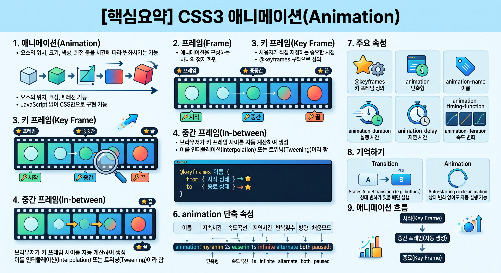

@keyframes borderColorChange를 활용해 테두리의 두께, 스타일, 색상을 시간에 따라 변화시킵니다.animation: borderColorChange 4s infinite 속성을 통해 4초 동안 무한 반복 동작합니다.:hover) 너비가 400px로 확대됩니다.
position: relative; 상태에서 left와 top 좌표를 제어하여 요소가 사각형 궤적으로 이동하도록 구현했습니다.animation-duration: 5s 속성으로 1회 순환에 5초가 소요됩니다.